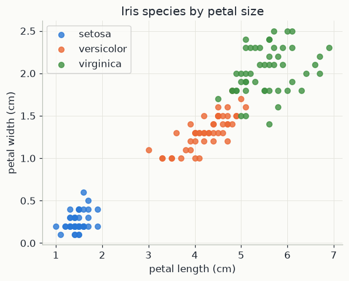
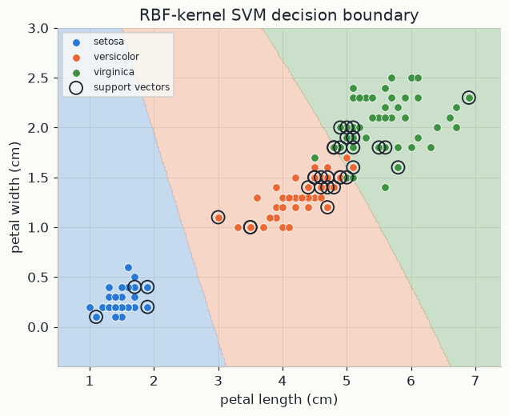
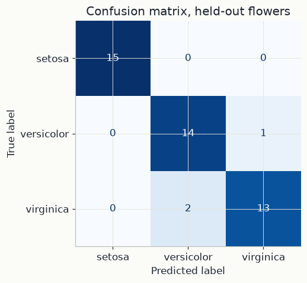

import numpy as np
import pandas as pd
import matplotlib.pyplot as plt
from sklearn.svm import SVC
from sklearn.model_selection import train_test_split
from sklearn.metrics import accuracy_score, confusion_matrix, ConfusionMatrixDisplay
import mlutils
mlutils.set_style()1. A straight boundary and the distance to it
Start with two classes. Training example i has a feature vector x_i of p numbers (below, p = 2: petal length and width, in cm) and a label y_i equal to +1 or -1. A linear classifier has a weight vector w (also p numbers) and a number b, the bias. It predicts
\hat y = \mathrm{sign}\big(w^\top x + b\big)
where w^\top x = w_1 x_1 + \dots + w_p x_p is the dot product. The decision function f(x) = w^\top x + b is positive on one side of the boundary and negative on the other. The boundary itself, where f(x) = 0, is a hyperplane: a line when p = 2, a plane when p = 3.
w is perpendicular to the boundary. Two points x_a and x_b on the boundary satisfy w^\top x_a + b = 0 and w^\top x_b + b = 0. Subtracting gives w^\top (x_a - x_b) = 0: w is at a right angle to every direction that lies along the boundary.
Distance to the boundary. Take any point x and let x_0 be the closest point on the boundary. The shortest path from the boundary to x runs along the perpendicular, the unit vector w / \lVert w \rVert, where \lVert w \rVert = \sqrt{w^\top w} is the length of w. So x = x_0 + t\, w / \lVert w \rVert for some number t, the signed distance. Apply f to both sides:
f(x) = \underbrace{w^\top x_0 + b}_{=\,0} + \; t\,\frac{w^\top w}{\lVert w \rVert} = t\,\lVert w \rVert
Solving for t and dropping the sign:
\text{distance}(x) = \frac{\lvert w^\top x + b \rvert}{\lVert w \rVert}
In words: the decision function, divided by the length of w, measures how far a point is from the boundary; its sign says on which side.
2. The widest margin
If a straight line can separate the two classes, many lines can. The SVM picks the one farthest from the closest points of both classes. The margin is the distance from the boundary to the nearest training point.
Fixing the scale. Multiplying w and b by the same positive number leaves the boundary f = 0 where it is. So we may scale them until the closest points satisfy \lvert w^\top x_i + b \rvert = 1. By Section 1 these points sit at distance 1/\lVert w \rVert, and the empty band between the lines w^\top x + b = \pm 1 is 2/\lVert w \rVert wide. "Every point is on its correct side and at least that far away" becomes one inequality per point (multiplying by the label makes both classes read "positive"):
y_i\big(w^\top x_i + b\big) \ge 1 \quad \text{for all } i
Making the margin 1/\lVert w \rVert as large as possible is the same as making \lVert w \rVert as small as possible. This gives the hard-margin SVM:
\min_{w,\,b}\ \tfrac12 \lVert w \rVert^2 \quad \text{subject to} \quad y_i\big(w^\top x_i + b\big) \ge 1 \ \text{ for all } i
Squaring and the \tfrac12 do not move the minimiser; they make the objective a smooth convex bowl with a single global minimum (chapter 02).
A hand example. Take the line x_1 + x_2 = 4, that is w = (1, 1) and b = -4, so \lVert w \rVert = \sqrt 2 \approx 1.414.
| point | x | y | f(x) = x_1 + x_2 - 4 | y\,f(x) | distance \lvert f(x) \rvert / \sqrt 2 | status |
|---|---|---|---|---|---|---|
| A | (1, 1) | −1 | −2 | 2 | 1.414 | beyond the margin |
| B | (2, 1) | −1 | −1 | 1 | 0.707 | on the margin |
| C | (3, 2) | +1 | 1 | 1 | 0.707 | on the margin |
| D | (4, 3) | +1 | 3 | 3 | 2.121 | beyond the margin |
Every point satisfies y\,f(x) \ge 1. B and C have y\,f(x) = 1 exactly: they sit on the margin, and the band between the classes is 2/\sqrt 2 \approx 1.414 wide. No line can do better, since B and C are only \sqrt 2 apart, so this is the SVM solution. Moving A or D a little changes nothing; B and C pin the boundary in place. They are the support vectors.
Soft margin. Real classes overlap, so some points must be allowed inside the margin or on the wrong side. Each point gets a slack \xi_i \ge 0 measuring its violation, charged at a price C > 0 per unit:
\min_{w,\,b,\,\xi}\ \tfrac12 \lVert w \rVert^2 + C \sum_i \xi_i \quad \text{subject to} \quad y_i\big(w^\top x_i + b\big) \ge 1 - \xi_i, \ \ \xi_i \ge 0
A point with \xi_i = 0 respects the margin; 0 < \xi_i \le 1 means inside the margin but on the correct side; \xi_i > 1 means misclassified. At the optimum each slack is as small as allowed, \xi_i = \max\big(0,\ 1 - y_i f(x_i)\big), which gives an equivalent problem without constraints:
\min_{w,\,b}\ \tfrac12 \lVert w \rVert^2 + C \sum_i \max\big(0,\ 1 - y_i(w^\top x_i + b)\big)
The second term is the hinge loss: zero for points beyond the margin on the correct side, growing linearly as a point enters the margin or crosses the boundary. (A point F = (2.5, 2) with label -1 would have y\,f = -0.5 above, so a hinge loss of 1.5.) The first term asks for a wide margin, the second for few violations, and C sets the exchange rate: a large C gives a narrow margin that follows the training points closely, a small C a wide margin that tolerates more violations.
3. Kernels: curved boundaries from dot products
Two facts about the solution make curved boundaries possible.
w is built from the training points. Split w into a combination of the training points plus a part w_\perp perpendicular to all of them. w_\perp changes no value w^\top x_i, so it helps no constraint, but it adds \lVert w_\perp \rVert^2 to the objective; at the optimum it is zero. Writing the weights of the combination as \alpha_i y_i:
w = \sum_i \alpha_i y_i\, x_i, \qquad f(x) = \sum_i \alpha_i y_i\, x_i^\top x + b
The optimality conditions (Lagrange multipliers) add that 0 \le \alpha_i \le C, and that \alpha_i = 0 for every point strictly beyond the margin, y_i f(x_i) > 1: such a point pays no hinge loss, even if it moves a little, so it has no say. The points with \alpha_i > 0 (on the margin, inside it, or misclassified) are the support vectors, and f is a sum over them only. In the example, \alpha_{\text{B}} = \alpha_{\text{C}} = 1 and \alpha_{\text{A}} = \alpha_{\text{D}} = 0 give w = -\text{B} + \text{C} = (1, 1), as found.
Only dot products appear. Substituting w back turns training into a problem over the \alpha_i alone (the dual problem, which is what solvers work with):
\max_{\alpha}\ \sum_i \alpha_i - \tfrac12 \sum_{i,j} \alpha_i \alpha_j\, y_i y_j\, x_i^\top x_j \quad \text{subject to} \quad 0 \le \alpha_i \le C, \ \ \sum_i \alpha_i y_i = 0
The data enter only through dot products x_i^\top x_j, both here and in f(x).
The kernel trick. Replace every dot product by a kernel k(x, z) equal to \varphi(x)^\top \varphi(z) for some map \varphi into a larger feature space. The SVM then draws a straight boundary in that space, curved in the original one, without ever computing \varphi. For example, with p = 2 the kernel k(x, z) = (x^\top z)^2 = x_1^2 z_1^2 + 2 x_1 x_2 z_1 z_2 + x_2^2 z_2^2 equals \varphi(x)^\top \varphi(z) with \varphi(x) = (x_1^2,\ \sqrt 2\, x_1 x_2,\ x_2^2); a flat boundary in those three coordinates is an ellipse or a hyperbola in the plane. The decision function becomes
f(x) = \sum_{i \,\in\, \text{support vectors}} \alpha_i y_i\, k(x_i, x) + b
The RBF kernel (radial basis function, or Gaussian) is
k(x, x') = \exp\!\big(-\gamma\, \lVert x - x' \rVert^2\big)
It equals 1 when x = x' and decays towards 0 as the points move apart. Each support vector adds a bump centred on itself, and the boundary is where the sum of bumps crosses zero. \gamma > 0 (units of 1/\text{cm}^2 here) sets the bump width, about 1/\sqrt\gamma. With \gamma = 1, points at distance 0.5, 1 and 2 get similarities e^{-0.25} \approx 0.78, e^{-1} \approx 0.37 and e^{-4} \approx 0.02. A large \gamma gives narrow bumps and a boundary that can wrap around single points (overfitting); a small \gamma gives an almost straight boundary.
More than two classes. scikit-learn's SVC trains one SVM per pair of classes (one-vs-one: 3 SVMs for three species) and predicts the class winning the most pairwise votes.
In the code below. X holds petal length and width (cm) for each flower, y the species. SVC(kernel="rbf", C=1.0, gamma="scale") solves the soft-margin problem with the RBF kernel and C = 1; gamma="scale" sets \gamma = 1/(p \cdot \mathrm{Var}), with p = 2 and \mathrm{Var} the variance of all entries of X_train. svm.n_support_ counts the support vectors of each class (the points with \alpha_i > 0), and svm.support_vectors_ holds their coordinates, circled in the boundary plot.
4. The data
Fisher's iris dataset: 150 flowers, 3 species, 4 measurements each. To draw a 2D decision boundary we'll use just petal length and petal width — the two measurements that separate the species best.
iris = pd.read_csv("data/iris.csv")
species = sorted(iris["species"].unique())
print(iris.shape, species)
iris.head()(150, 5) ['setosa', 'versicolor', 'virginica'] sepal_length sepal_width petal_length petal_width species 0 5.1 3.5 1.4 0.2 setosa 1 4.9 3.0 1.4 0.2 setosa 2 4.7 3.2 1.3 0.2 setosa 3 4.6 3.1 1.5 0.2 setosa 4 5.0 3.6 1.4 0.2 setosa
fig, ax = plt.subplots(figsize=(6, 4.5))
for sp_name, color in zip(species, mlutils.PALETTE):
sub = iris[iris["species"] == sp_name]
ax.scatter(sub["petal_length"], sub["petal_width"], label=sp_name, color=color, alpha=0.8)
ax.set(xlabel="petal length (cm)", ylabel="petal width (cm)", title="Iris species by petal size")
ax.legend()<matplotlib.legend.Legend at 0x1b3636c8440>

setosa is already linearly separable from the other two just by petal size;
versicolor and virginica overlap more. That's the interesting part for a
classifier to resolve.
5. Fitting the SVM
We hold out 30% of the flowers as a test set, fit an RBF-kernel SVM (a Gaussian kernel — it can draw curved boundaries) on the rest, and score it on flowers it never saw during training.
X = iris[["petal_length", "petal_width"]].values
y = iris["species"].values
X_train, X_test, y_train, y_test = train_test_split(X, y, test_size=0.3, random_state=42, stratify=y)
svm = SVC(kernel="rbf", C=1.0, gamma="scale").fit(X_train, y_train)
y_pred = svm.predict(X_test)
acc = accuracy_score(y_test, y_pred)
print(f"test accuracy: {acc:.3f} ({len(X_test)} held-out flowers)")
print(f"support vectors used: {svm.n_support_.sum()} of {len(X_train)} training points")test accuracy: 0.933 (45 held-out flowers) support vectors used: 34 of 105 training points
6. The decision boundary
Because we only used 2 features, the boundary the SVM learned can be drawn directly: colour every point of the plane by what the model would predict there.
x_min, x_max = X[:, 0].min() - 0.5, X[:, 0].max() + 0.5
y_min, y_max = X[:, 1].min() - 0.5, X[:, 1].max() + 0.5
xx, yy = np.meshgrid(np.linspace(x_min, x_max, 300), np.linspace(y_min, y_max, 300))
label_to_int = {s: i for i, s in enumerate(species)}
Z = np.array([label_to_int[p] for p in svm.predict(np.c_[xx.ravel(), yy.ravel()])]).reshape(xx.shape)
fig, ax = plt.subplots(figsize=(6.5, 5))
ax.contourf(xx, yy, Z, alpha=0.25, colors=mlutils.PALETTE[:3], levels=[-0.5, 0.5, 1.5, 2.5])
for sp_name, color in zip(species, mlutils.PALETTE):
sub = iris[iris["species"] == sp_name]
ax.scatter(sub["petal_length"], sub["petal_width"], label=sp_name, color=color,
edgecolor="white", linewidth=0.5, s=40)
ax.scatter(svm.support_vectors_[:, 0], svm.support_vectors_[:, 1], s=110, facecolors="none",
edgecolors=mlutils.INK, linewidth=1.2, label="support vectors")
ax.set(xlabel="petal length (cm)", ylabel="petal width (cm)", title="RBF-kernel SVM decision boundary")
ax.legend(loc="upper left", fontsize=8)<matplotlib.legend.Legend at 0x1b363820050>

Only the support vectors (circled) determine where the boundary sits — every other training point could move around freely without changing the fit at all, as long as it doesn't cross into the margin. That's what makes SVMs memory-efficient at prediction time: the boundary is a function of a handful of points, not the whole dataset.
cm = confusion_matrix(y_test, y_pred, labels=species)
fig, ax = plt.subplots(figsize=(5, 4.5))
ConfusionMatrixDisplay(cm, display_labels=species).plot(ax=ax, cmap="Blues", colorbar=False)
ax.set_title("Confusion matrix, held-out flowers")Text(0.5, 1.0, 'Confusion matrix, held-out flowers')

Exercises
Exercise 1: Linear vs. RBF kernel
Refit with kernel="linear". Does accuracy change much? Plot its decision boundary
next to the RBF one — where does a straight boundary struggle that a curved one
doesn't?
Solution
svm_linear = SVC(kernel="linear", C=1.0).fit(X_train, y_train)
print(accuracy_score(y_test, svm_linear.predict(X_test)))
On this dataset the classes are nearly linearly separable already, so the linear kernel does almost as well — the RBF boundary's curvature only matters in the small overlap region between versicolor and virginica.
Exercise 2: The cost of a small margin
Try C=1000 (very little tolerance for margin violations) and C=0.01 (very
tolerant). Compare the number of support vectors and the test accuracy in each case.
Solution
A large C chases every training point, uses more support vectors, and can overfit
the overlap region; a very small C allows a wide, smoother margin and often
generalises about as well with far fewer support vectors — a direct look at the
bias-variance trade-off.
Key takeaways
- An SVM finds the boundary with the widest margin to the nearest points of each class; those nearest points (the support vectors) are the only ones the boundary actually depends on.
- A kernel (here, RBF) lets the boundary curve through feature space without explicitly constructing new features.
Ctrades off margin width against tolerance for misclassified training points — it's the SVM's main regularisation knob.